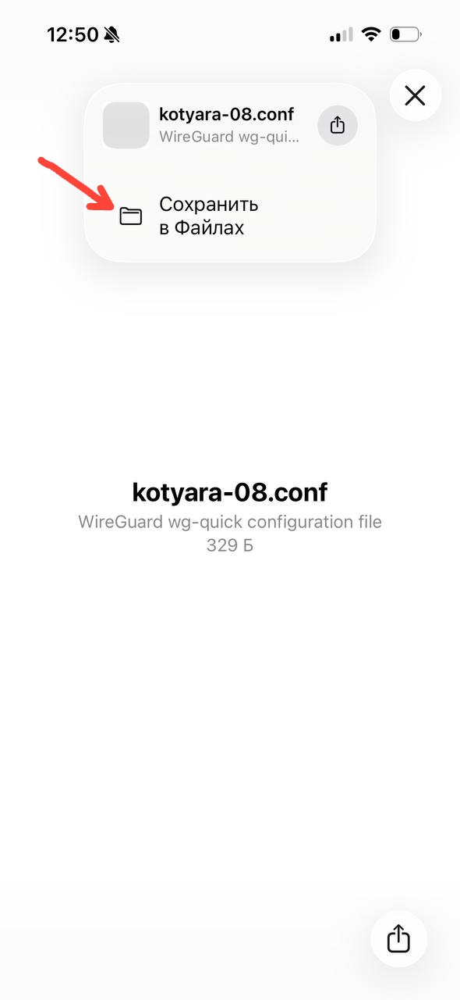
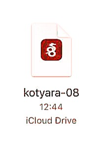
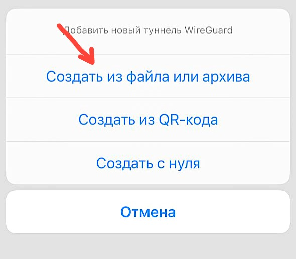
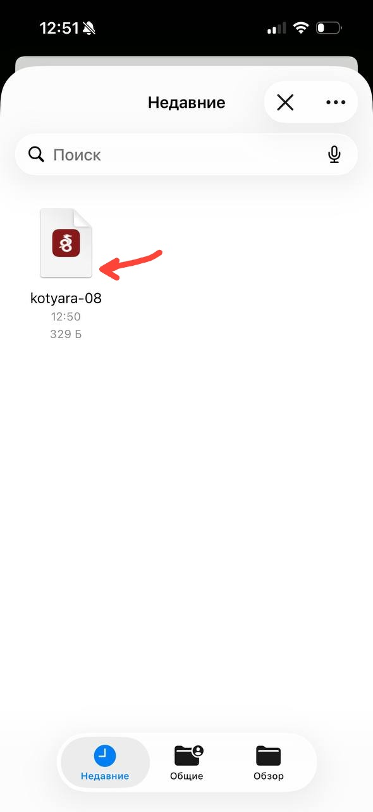

iPhone и iPad
На iPhone отдельное приложение Kotyara VPN не нужно. Работает бесплатное приложение WireGuard из App Store — в него загружается файл настроек.
Скачать WireGuard apps.apple.com/app/wireguard/id1441195209 · бесплатноСначала попросите файл настроек
Для iPhone нужен файл с окончанием .conf. Его выдаёт тот, кто дал вам доступ к VPN, — попросите у него файл именно для вашего телефона.
Один файл — одно устройство. Не ставьте один и тот же файл на два телефона: они будут мешать друг другу.
Установите WireGuard
Нажмите кнопку выше — она открывает страницу приложения в App Store. Нажмите «Загрузить», затем «Открыть». Приложение бесплатное, регистрация в нём не нужна.
Если кнопка не сработала, откройте App Store, введите в поиск WireGuard и установите приложение с таким названием (разработчик — WireGuard Development Team).
Скачайте файл настроек
Попросите у того, кто выдал вам доступ, файл kotyara-…conf — его присылают в мессенджере, почтой или ссылкой. Откройте файл на телефоне: Safari покажет окно загрузки, в нём нажмите «Сохранить в Файлах».

Файл должен заканчиваться на .conf
В файле три части: [Interface], ключи и [Peer]. Внутри только текст, никаких картинок и архивов.
Мессенджеры иногда меняют окончание на .bin или .txt — тогда WireGuard файл не узнает. Скачайте его ещё раз в браузере или переименуйте обратно в .conf.
Проверьте, что файл на месте
Откройте приложение «Файлы» → раздел «Обзор» → iCloud Drive или папка «Загрузки». Свежий файл обычно виден сразу в «Недавних». Название должно быть вида kotyara-08.conf.

Если файла нет — вернитесь к предыдущему шагу и сохраните его ещё раз, уже именно в «Файлы».
Добавьте туннель в WireGuard
Откройте WireGuard и нажмите «+» в правом верхнем углу. В меню выберите «Создать из файла или архива» (Create from file or archive) — третья кнопка снизу не нужна.

Выберите сохранённый файл
Откроется тот же «Файлы». Найдите свой файл kotyara-…conf и нажмите на него. Название туннеля можно оставить как есть — нажмите «Сохранить».

Если вместо списка открылась папка с музыкой или фото — нажмите «Обзор» внизу и выберите iCloud Drive.
Разрешите VPN
iPhone спросит: «WireGuard хочет добавить конфигурации VPN». Нажмите «Разрешить» и подтвердите Face ID, Touch ID или кодом экрана. Это стандартный запрос iOS, он появляется один раз.
Если окно не появилось, а туннель в списке есть — значит разрешение уже выдано раньше, идём дальше.
Включите переключатель
В списке появится ваш туннель с названием файла. Нажмите переключатель рядом с ним — он станет зелёным, а вверху экрана появится значок VPN. Готово.
Проверка
Откройте любой сайт — если он открывается, VPN работает. Значок VPN остаётся вверху экрана, пока вы не выключите переключатель.
Если что-то пошло не так
- Не подключается — выключите и включите переключатель ещё раз, подождите 10 секунд.
- Мешает iCloud Private Relay — «Настройки» → ваше имя → «iCloud» → «Private Relay» → выключить. Или «Настройки» → «Сотовые данные» → «Ограничение отслеживания IP-адреса» → выключить.
- Файл не открывается — проверьте, что он заканчивается на .conf, а не на .txt. Переименуйте или попросите файл заново.
- Туннель есть, но интернета нет — файл мог устареть или быть выдан для другого устройства. Попросите новый.
Больше подсказок — на странице «Если что-то не работает».